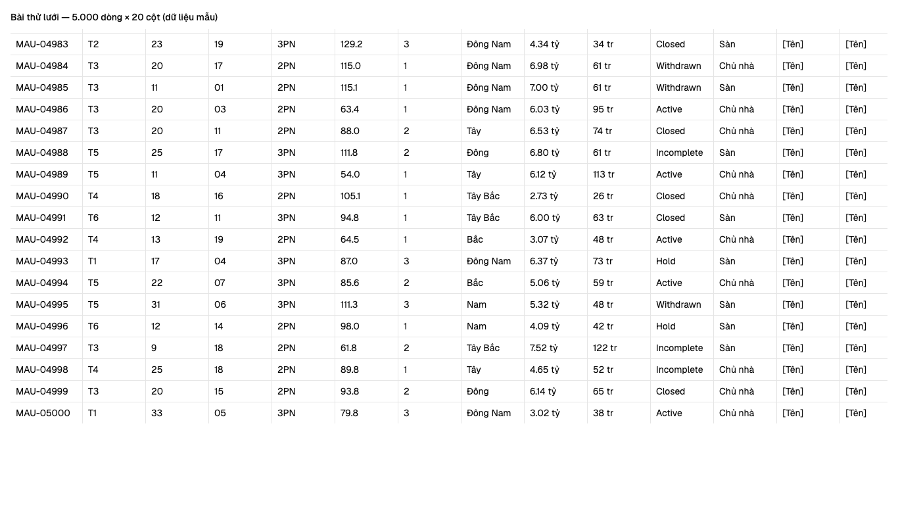
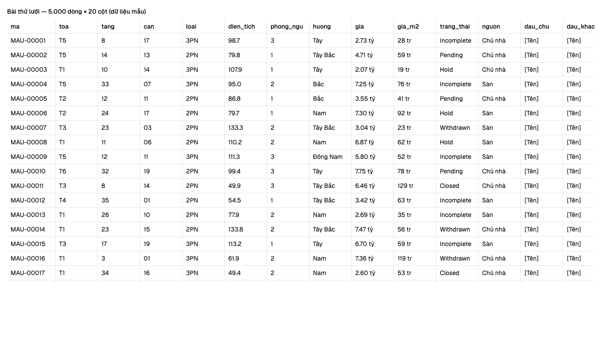
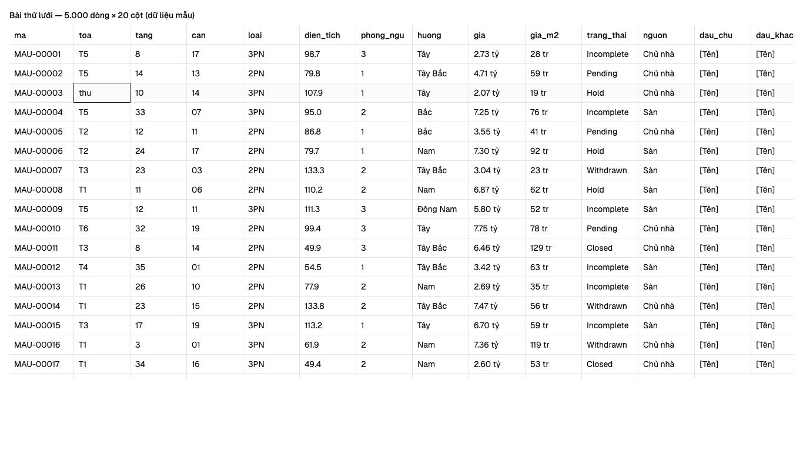
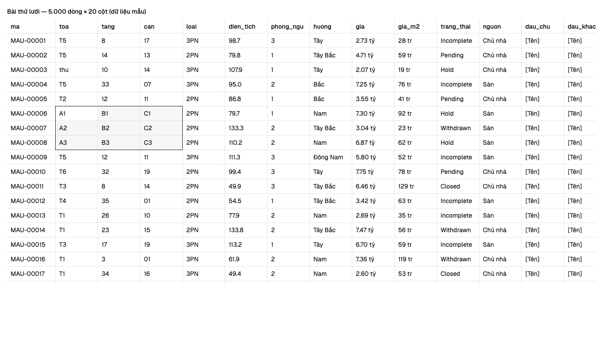

"Lưới bảng hàng 5.000 dòng × 20 cột cuộn, sửa trên ô và dán 500 ô từ Excel mà không giật trên máy tính văn phòng"
Vì sao làm
Kiến trúc §9 bước 1: chọn lưới ReUI hay lưới vẽ canvas trước khi dựng bảng hàng
Đã hứa
- AC-1 — Given nhánh thử ở sha ghim trong `thu/nhanh-thu.json`, When mở `/spikes/luoi`, Then trang dựng lưới ReUI
- AC-2 — Given trang thử, Chrome khổ 1366×768, CPU giảm tốc 4×, When cuộn từ dòng 1 tới dòng 5.000 trong khoảng 8 giây,
- AC-3 — Given cùng cấu hình, When mở một ô và gõ 30 ký tự, Then trung vị ba lượt của p95 từ `event.timeStamp` của phím
- AC-4 — Given cùng cấu hình, When dán 25 × 20 ô (TSV, như chép từ Excel) bằng Ctrl/Cmd+V vào một ô, Then trung vị ba lượt
- AC-5 — Given trang ở chế độ `?cham=1` (việc bận 60 ms mỗi khung hình, 1.200 ms mỗi lô ghi), When chạy cùng máy đo, Then
- AC-6 — Given main có hồ sơ này, When chạy `node _acceptance/bai-thu-luoi-5000-dong/thu/do-lai.mjs`, Then lệnh dựng lại
- AC-7 — Given số đo, When người duyệt đọc `docs/adr/0004-luoi-bang-hang.md`, Then ADR nêu số đo ba lượt, cấu hình máy đo,
- AC-9 — Given ReUI trượt ít nhất một thước, When dựng Glide Data Grid trên nhánh thử ở cùng trang, cùng dữ liệu, Then
- AC-8 — Given PR vào main, When so diff với nhánh chính, Then không tệp nào dưới `apps/web/**` hay `package-lock.json` đổi
Thiết kế
_acceptance/bai-thu-luoi-5000-dong/design.md
Quyết định
- 2026-10-30 · Người · seal · gate1 —
- 2026-10-30 · Máy · approach · S1 — Đã tra tri thức: Lưới bảng hàng 5.000 dòng × 20 cột cuộn, sửa trên ô và dán 500 ô từ Excel mà không giật trên máy tính văn phòngKho đã khai tri_thuc — bước thiết kế tra trang trước khi chọn.
- 2026-10-30 · Máy · approach · S1 — Đo lưới ReUI data-grid trước; chỉ dựng và đo Glide Data Grid khi ReUI trượt; ADR chọn theo đúng luật đó.Kiến trúc §8 đặt sẵn thứ tự thử và lối đổi; thang dùng lại của kho cũng chọn khối ReUI trước.
- 2026-10-30 · Máy · approach · S1 — Mã thử (trang /spikes/luoi, data-grid, playwright-core, cờ kiểu) ở nhánh thử thu/bai-thu-luoi-5000-dong, không gộp; PR vào main chỉ mang hồ sơ, máy đo dựng lại nhánh thử ở sha ghim, và ADR.Luật 5 của đợt cho mã thử hai chỗ; trang Next phải nằm trong apps/web nên chỉ nhánh thử giữ được main sạch.
- 2026-10-30 · Máy · approach · S1 — Mô phỏng máy văn phòng bằng Chrome khổ 1366×768 và giảm tốc CPU 4× của DevTools; ngưỡng cuộn p95 ≤ 33,4 ms và khung > 50 ms ≤ 1%, gõ p95 ≤ 50 ms, dán ≤ 1.000 ms; trung vị ba lượt.Kho không có máy văn phòng thật để đo; 4× là nấc máy tầm trung chuẩn của DevTools; 33,4 ms là 30 khung/giây, 50 ms là khung giật thấy được.
- 2026-10-30 · Máy · fix · S3 — Độ trễ gõ và dán đo bằng performance.now() lúc callback khung chạy; nhịp khung khi cuộn giữ dấu thời gian khung của trình duyệt; nhịp lúc callback chạy ghi làm số phụ trong JSON và ADR.Đối chứng đỏ ?cham=phim bắt được dấu thời gian khung sớm hơn cả phím (dán ra số âm, thước gõ không trượt); dấu thời gian khung vẫn là chuẩn đo nhịp khung và ?cham=1 chứng nó bắt được giật (p95 100 ms).
- 2026-10-30 · Máy · fix · S3 — Trang thử gắn thêm DataGridCellSelection như ví dụ c-data-grid-31; gỡ ví dụ c-data-grid-31 và hai thành phần nó kéo theo khỏi nhánh thử vì trang không dùng.Thiếu DataGridCellSelection thì lưới không nhận tiêu điểm và phím đi lạc (chẩn đoán S3); ví dụ không dùng làm lint của nhánh thử đỏ và hook pre-push chặn đẩy.
- 2026-10-30 · Máy · approach · S1 — Mã thử ở nhánh thử thu/bai-thu-luoi-5000-dong, ghim bằng tag thu/bai-thu-luoi-5000-dong-v1; PR vào main chỉ mang hồ sơ, máy đo dựng lại từ tag, và ADR.Luật 5 cho mã thử hai chỗ; gap-probe P0 chỉ ra nhánh trần có thể bị dọn nên ghim bằng tag.
- 2026-10-30 · Máy · approach · S1 — Hỏi-1: ký ngưỡng đo — máy văn phòng mô phỏng Chrome 1366×768 giảm tốc CPU 4×; cuộn p95 ≤ 33,4 ms và khung > 50 ms ≤ 1%; gõ p95 ≤ 50 ms; dán 500 ô ≤ 1.000 ms.Gap-probe P0: câu «không tụt khung hình thấy được» trong ô cơ hội phải dịch thành số, và số quyết luôn lưới cho bảng hàng — đó là ngưỡng sản phẩm.
- 2026-10-30 · Máy · descope · S1 — bỏ design-pass — chỉ có trang thử trên nhánh thử để đo, không phải màn sản phẩmDesign §Đặc tả UX: trang thử không vào main; màn bảng hàng thật dựng ở hàng 14–16 với khối đích của vo-va-ia.md.
- 2026-10-30 · Máy · fix · S4-r1 — Thước cuộn ghi vị trí cuộn thật theo từng khung và chỉ đạt khi cả ba lượt tới dòng MAU-05000 với quãng đường ≥ 99%; lệnh đo lại dùng cổng riêng 3468, bắt máy chủ con chết, đòi phản hồi ok và thoát 2 khi dựng hay máy đo hỏng.Lượt chấm 1: hai phát hiện trong hợp đồng (AC-2) — thước cuộn chấm theo lệnh cuộn đã phát, không theo nội dung cuộn; BLOCKED vì cổng 3462 đụng máy chủ của bài nhìn giao diện.
Bằng chứng
Các eval
| Eval | Tiêu chí | Loại | Verdict | run_id | verified_at |
|---|---|---|---|---|---|
| E1 | AC-6 | test | PASS | minted-bai-thu-luoi-5000-dong-E1-r2 | 2026-10-30T10:23:57Z |
| E2 | AC-1 | script | PASS | minted-bai-thu-luoi-5000-dong-E2-r2 | 2026-10-30T10:23:57Z |
| E3 | AC-2 | script | PASS | minted-bai-thu-luoi-5000-dong-E3-r2 | 2026-10-30T10:23:57Z |
| E4 | AC-3 | script | PASS | minted-bai-thu-luoi-5000-dong-E4-r2 | 2026-10-30T10:23:57Z |
| E5 | AC-4 | script | PASS | minted-bai-thu-luoi-5000-dong-E5-r2 | 2026-10-30T10:23:57Z |
| E6 | AC-5 | script | PASS | minted-bai-thu-luoi-5000-dong-E6-r2 | 2026-10-30T10:23:57Z |
| E7 | AC-8 | script | PASS (CARRY-FORWARD TỪ ROUND 1) | minted-bai-thu-luoi-5000-dong-E7-r1 | 2026-10-30T10:09:33Z |
| E8 | AC-1 | ui-check | PASS | minted-bai-thu-luoi-5000-dong-E8-r2 | 2026-10-30T10:23:57Z |
| E9 | AC-7 | judgment | PASS (ĐỀ XUẤT CỦA HỘI ĐỒNG, CHỜ NGƯỜI CHỐT) | — | — |
| E10 | AC-9 | script | PASS | minted-bai-thu-luoi-5000-dong-E10-r2 | 2026-10-30T10:23:57Z |
Chi tiết từng eval
PASS E1 · test
AC-6: Given main có hồ sơ này, When chạy `node _acceptance/bai-thu-luoi-5000-dong/thu/do-lai.mjs`, Then lệnh dựng lại
node --test "_acceptance/bai-thu-luoi-5000-dong/thu/*.test.mjs" ℹ duration_ms 43.259792
PASS E2 · script
AC-1: Given nhánh thử ở sha ghim trong `thu/nhanh-thu.json`, When mở `/spikes/luoi`, Then trang dựng lưới ReUI
node _acceptance/bai-thu-luoi-5000-dong/thu/do-lai.mjs --chi-trang --cong 3466
{"tag":"thu/bai-thu-luoi-5000-dong-v1","sha":"98735f182194d4c3520632bb9818eb235722e798","trang":{"dong":5000,"cot":20,"mau":"MAU-00001"}}
PASS E3 · script
AC-2: Given trang thử, Chrome khổ 1366×768, CPU giảm tốc 4×, When cuộn từ dòng 1 tới dòng 5.000 trong khoảng 8 giây,
node _acceptance/bai-thu-luoi-5000-dong/thu/do-lai.mjs
{"tag":"thu/bai-thu-luoi-5000-dong-v1","sha":"98735f182194d4c3520632bb9818eb235722e798","trang":{"dong":5000,"cot":20,"mau":"MAU-00001"},"may":{"hieu_chuan_hop_le":true,"loadavg":"{ 6.12 7.00 6.28 }"},"thuong":{"reui":{"cuon":{"p95":33.3999
PASS E4 · script
AC-3: Given cùng cấu hình, When mở một ô và gõ 30 ký tự, Then trung vị ba lượt của p95 từ `event.timeStamp` của phím
Cùng một lệnh do-lai.mjs với E3, cùng một lần chạy.
{"tag":"thu/bai-thu-luoi-5000-dong-v1","sha":"98735f182194d4c3520632bb9818eb235722e798","trang":{"dong":5000,"cot":20,"mau":"MAU-00001"},"may":{"hieu_chuan_hop_le":true,"loadavg":"{ 6.12 7.00 6.28 }"},"thuong":{"reui":{"cuon":{"p95":33.3999
PASS E5 · script
AC-4: Given cùng cấu hình, When dán 25 × 20 ô (TSV, như chép từ Excel) bằng Ctrl/Cmd+V vào một ô, Then trung vị ba lượt
Cùng một lệnh do-lai.mjs với E3, cùng một lần chạy.
{"tag":"thu/bai-thu-luoi-5000-dong-v1","sha":"98735f182194d4c3520632bb9818eb235722e798","trang":{"dong":5000,"cot":20,"mau":"MAU-00001"},"may":{"hieu_chuan_hop_le":true,"loadavg":"{ 6.12 7.00 6.28 }"},"thuong":{"reui":{"cuon":{"p95":33.3999
PASS E6 · script
AC-5: Given trang ở chế độ `?cham=1` (việc bận 60 ms mỗi khung hình, 1.200 ms mỗi lô ghi), When chạy cùng máy đo, Then
Cùng một lệnh do-lai.mjs với E3, cùng một lần chạy.
{"tag":"thu/bai-thu-luoi-5000-dong-v1","sha":"98735f182194d4c3520632bb9818eb235722e798","trang":{"dong":5000,"cot":20,"mau":"MAU-00001"},"may":{"hieu_chuan_hop_le":true,"loadavg":"{ 6.12 7.00 6.28 }"},"thuong":{"reui":{"cuon":{"p95":33.3999
PASS (CARRY-FORWARD TỪ ROUND 1) E7 · script
AC-8: Given PR vào main, When so diff với nhánh chính, Then không tệp nào dưới `apps/web/**` hay `package-lock.json` đổi
PASS E8 · ui-check
AC-1: Given nhánh thử ở sha ghim trong `thu/nhanh-thu.json`, When mở `/spikes/luoi`, Then trang dựng lưới ReUI









Lưu ý: ở khung E8-cuoi.png hàng tiêu đề dính (sticky) chỉ hiện một dải mỏng, chữ tên cột bị che. Ghi nhận cho người xem, không làm trượt Expected. Lưu ý: lần đọc clipboard đầu tiên của trình duyệt trả về chuỗi không liên quan, vì đọc trước khi ghi xong. Tôi không dùng chuỗi đó, ghi lại rồi đọc lại thì khớp TSV. Khung đã lưu (đường tuyệt đối dưới /Users/manhphan/dev/onehub-quy-hang/.claude/worktrees/keen-nobel-8bf388/_acceptance/bai-thu-luoi-5000-dong/evidence/): E8-dau.png, E8-cuoi.png, E8-sua.png, E8-dan.png, E8-step1.png, E8-step2.png, E8-step3.png, E8-step4.png, E8-step5.png (bản sao theo thứ tự bước), E8-network.txt.
PASS (ĐỀ XUẤT CỦA HỘI ĐỒNG, CHỜ NGƯỜI CHỐT) E9 · judgment
AC-7: Given số đo, When người duyệt đọc `docs/adr/0004-luoi-bang-hang.md`, Then ADR nêu số đo ba lượt, cấu hình máy đo,
Phán đoán: Hai góc nhìn PASS, một góc nhìn chưa tự phán được. Cả ba cùng nêu một lệch về nhãn dẫn: ADR-0004 và hợp đồng ghi luật «Lưới bảng hàng» ở «Kiến trúc §8», nhưng dòng đó nằm ở bảng Stack §5 (dòng 150) của kien-truc-repo-va-stack.md còn §8 là «Dữ liệu cá nhân và an toàn». Nội dung luật đúng; mọi số trong ADR khớp so-do.json.
PASS E10 · script
AC-9: Given ReUI trượt ít nhất một thước, When dựng Glide Data Grid trên nhánh thử ở cùng trang, cùng dữ liệu, Then
Cùng một lệnh do-lai.mjs với E3, cùng một lần chạy.
{"tag":"thu/bai-thu-luoi-5000-dong-v1","sha":"98735f182194d4c3520632bb9818eb235722e798","trang":{"dong":5000,"cot":20,"mau":"MAU-00001"},"may":{"hieu_chuan_hop_le":true,"loadavg":"{ 6.12 7.00 6.28 }"},"thuong":{"reui":{"cuon":{"p95":33.3999
Eval không phân biệt (Analyst)
Vòng verify
- Round 1: E3, E4, E5, E6, E10 BLOCKED — lệnh do-lai.mjs thoát với lỗi vì máy chủ ở cổng 3462 không chạy lúc đo (kết nối bị từ chối), chưa có số đo. E1, E2, E7, E8 và bảy lệnh suite đều đạt; E9 chờ người chốt. Trả về để chạy lại do-lai.mjs trên cổng riêng.
- Round 2: E1 đến E6, E8, E10 và bảy lệnh suite đều đạt trên commit 5408d49d. Lệnh đo lại dùng cổng riêng, thước cuộn chứng tới dòng 5.000, ba thước đo cùng máy đo hợp lệ ở cả ba lượt. E7 mang sang từ round 1 (phần thay đổi không chạm đường dẫn của eval). E9 giữ đề xuất PASS, chờ người chốt.
Tài nguyên
| Khối | Tác tử | Token đầu ra |
|---|---|---|
| S4 round 1 | 24 | 93.363 |
1 lượt chấm · tổng 93.363 token
Giới hạn và ngoài hợp đồng
- Dựng bảng hàng thật (hàng 14–16) và khối Pro `data-grid-editing-6`.
- Lọc, nhóm, sắp xếp, ghim cột — bài thử chỉ đo ba thao tác của ngưỡng.
- Dữ liệu thật hay nạp từ máy chủ — dữ liệu sinh trong trình duyệt.
- Đo Glide Data Grid khi ReUI đã đạt (AC-9 ghi «không áp»).
- Đưa trang thử, `playwright-core` hay cờ kiểu vào main.
Giao
chưa ghi quan sát production
Giá trị
- Câu hỏi phép đo trả lời: [đề xuất] đã đạt «Trên dữ liệu sinh 5.000 dòng: cuộn và gõ không tụt khung hình thấy được, dán 500 ô xong dưới một giây; kết luận chọn lưới ghi thành ADR» chưa? — chưa đo
- Kết quả nào là SỐNG: [đề xuất] Trên dữ liệu sinh 5.000 dòng: cuộn và gõ không tụt khung hình thấy được, dán 500 ô xong dưới một giây; kết luận chọn lưới ghi thành ADR — chưa đo
- Kết quả nào là CHẾT: [đề xuất] chưa đạt «Trên dữ liệu sinh 5.000 dòng: cuộn và gõ không tụt khung hình thấy được, dán 500 ô xong dưới một giây; kết luận chọn lưới ghi thành ADR» khi hết timebox — chưa đo
- Timebox: … — chưa đo